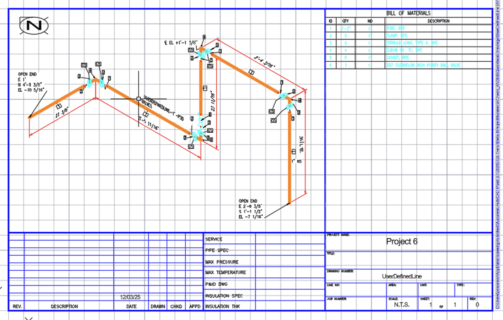
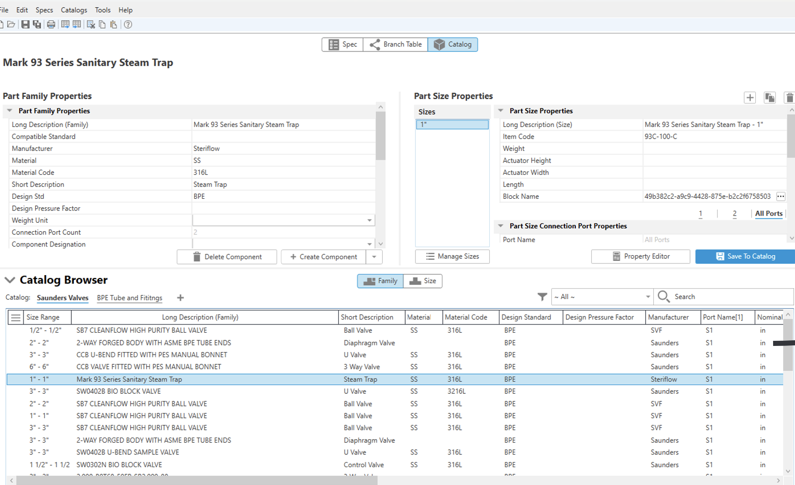
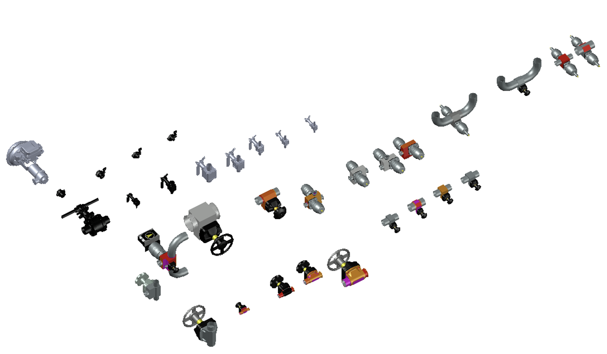

Plant 3D · T.G. Gallagher co-op
We had a frustrating problem with our Plant 3D workflow. The software ships with generic pipe specs and part catalogs, but none of it matched what we actually installed on refrigeration jobs. Engineers would design with standard parts, then the fabrication team had to translate everything into our real suppliers' components — a lot of guessing, wrong orders, and delays waiting for the right parts. My boss asked me to set up custom specs and catalogs with the parts we actually used, so designs would match what got built.
First I talked to the project managers and the guys who'd been in the field to pin down exactly which manufacturers and parts we used regularly — specific copper tube sizes, fitting types, valves, all the refrigeration-specific stuff. Then I had to learn Plant 3D's spec editor, which was honestly kind of a pain. Everything is organized by piping class, pressure ratings, and temperature ranges, and you have to link manufacturer parts to the right specs. Getting part numbers, sizes, and connection types entered correctly took forever. I pulled data from manufacturer websites, checked it against old project submittals, and built test piping layouts to make sure everything actually fit together. When I couldn't find a spec, I just called our suppliers and asked.

Once it was set up, I built a test project — a small refrigeration system with all the correct parts — and ran a bill of materials to confirm the quantities and part numbers matched what we'd actually order. The team's feedback was good: people liked grabbing the right parts from the catalog instead of looking everything up separately, and when engineers designed something, we knew right away whether it would work with our actual systems.

This became the standard for Plant 3D specs on all our projects afterward. It saved a ton of time and frustration, and the designs got noticeably more accurate. It also drove home a lesson: if the specs and catalogs behind a BIM model aren't right, the whole workflow falls apart. Good data in, good model out.
